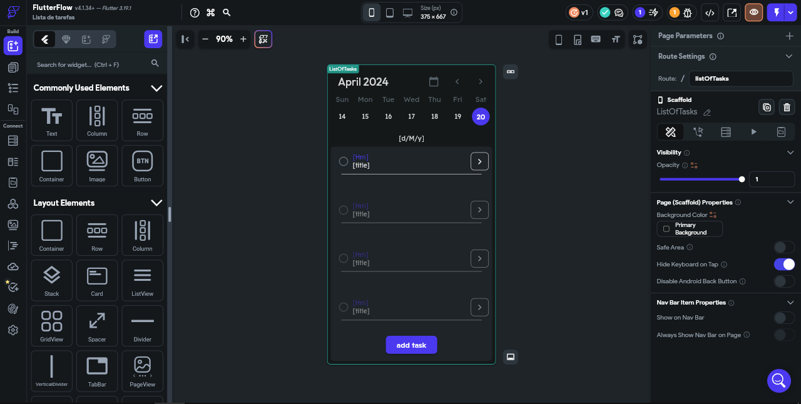
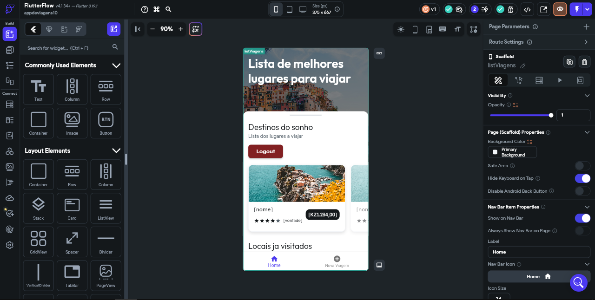
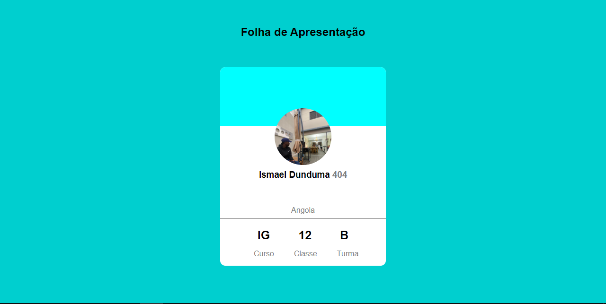

PROJETOS JÁ FEITOS
Gestor de Tarefas

Este software foi desenvolvido em FlutterFlow, foi desenvolvido para o gerenciamento de tarefas diárias, no intuito de facilitar a organização de tarefas pessoais ou empresariais.
APP de Viagens

Este software foi desenvolvido em FlutterFlow, é um software de planejamento de viagens pessoais, onde são salvos os lugares que pretende visitar, colocar detalhes sobre a viagem e muito mais.
Folha de Apresentação

Este projeto foi desenvolvido com html e css, é uma folha de apresentação para os alunos da escola.
Cabeamento Estruturado
 Este projeto foi feito nas aulas práticas de redes, onde estrturamos uma rede, usando como base as inicias dos nossos nomes, onde foram colocados os cabos de redes e as tomadas.
Este projeto foi feito nas aulas práticas de redes, onde estrturamos uma rede, usando como base as inicias dos nossos nomes, onde foram colocados os cabos de redes e as tomadas.